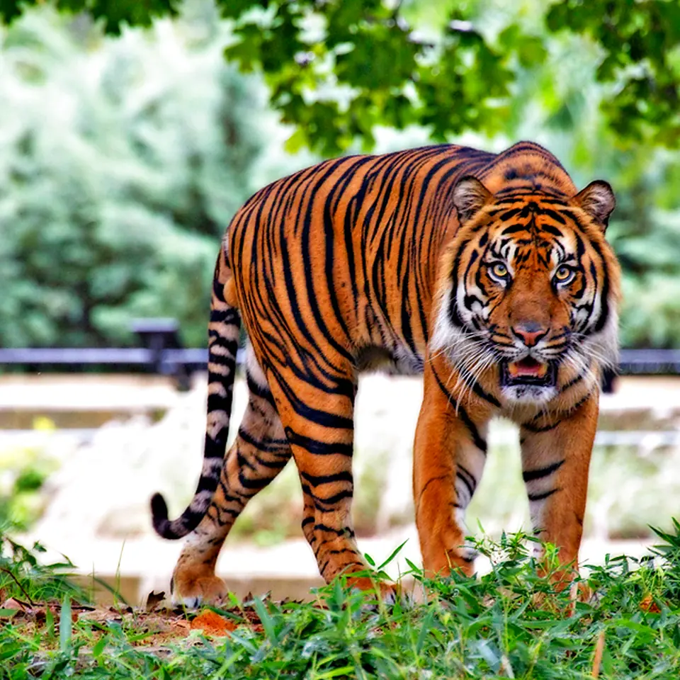
Species diversity
Stronger species help safeguard both nature and people.
BHOC Species & Biodiversity Protection Initiative
From Nature. Through Science. Back to Nature.
Advancing a science-driven vision for species protection, wildlife health, and oxygen-delivery support across the living world.
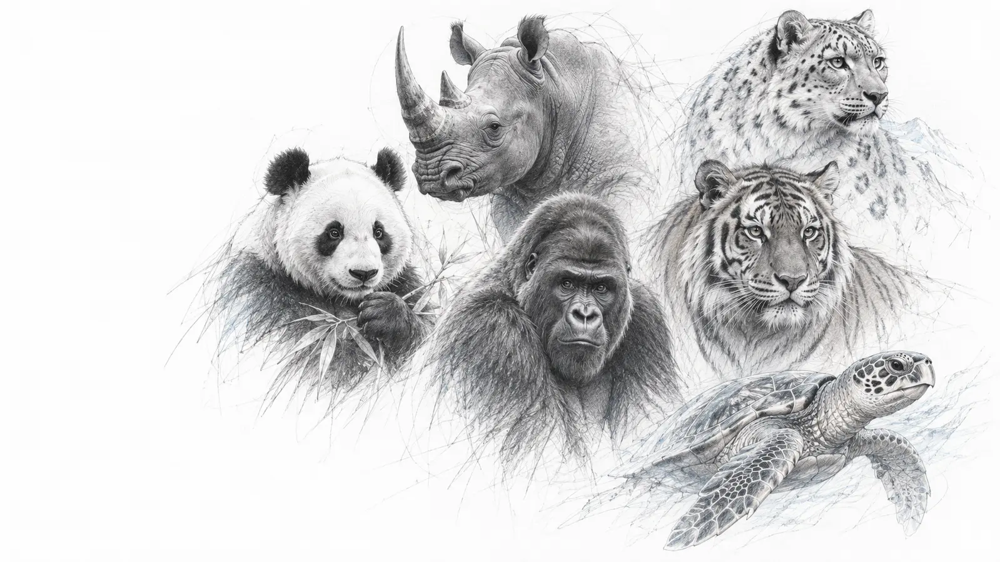
Across the living world, extraordinary species face unique challenges. Even with the best care, access to donor blood can be limited, precisely when it is needed most.

Stronger species help safeguard both nature and people.
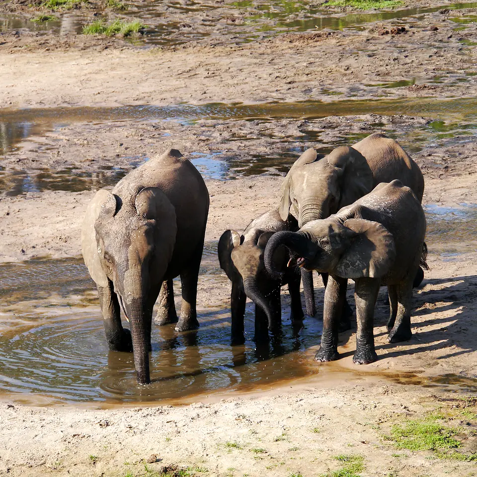
In remote areas, donor supply, storage, and logistics can be limited or unavailable.
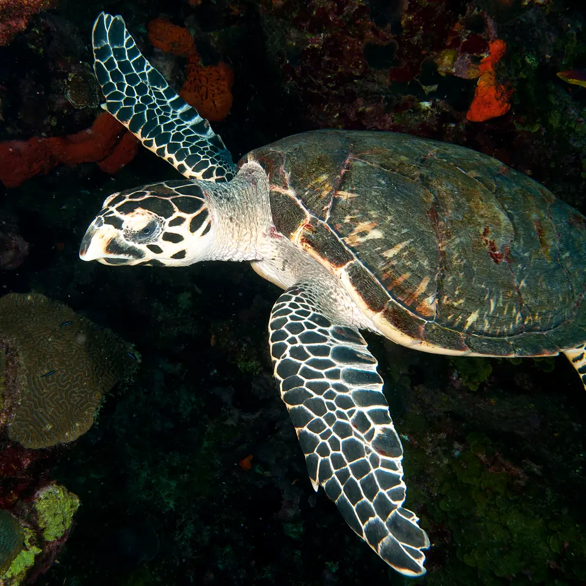
Oxygen-delivery options may bridge critical needs when donor blood is unavailable or delayed.
Across species. Across continents. A shared need. A stronger tomorrow.
Species differ. Blood systems differ. But the biological need for oxygen is universal. The BHOC Initiative applies comparative biology and veterinary evidence to support species protection across the living world. Explore the source-linked evidence.
Gas exchange moves oxygen from inhaled air into pulmonary blood.
Erythrocytes carry oxygen. BHOC is designed to carry oxygen in plasma.
Circulation brings oxygen toward organ tissue and its microvasculature.
Oxygen moves from the microcirculation through tissue to cells.
Mitochondria use oxygen in aerobic metabolism to support ATP production.
Evidence boundary: Veterinary evidence is product and species specific. Historical Oxyglobin approvals and study outcomes do not establish BHOC approval or efficacy across species. The current veterinary index contains 236 bibliographic records, including 235 source-linked citations.
“We be of one blood, ye and I.”Rudyard Kipling, The Jungle Book
Applying science. Building partnerships. Expanding impact across species and ecosystems.
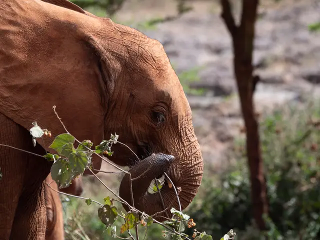
Supporting emergency care and critical solutions.
Photo: Andrea Hanks / The White HousePublic domain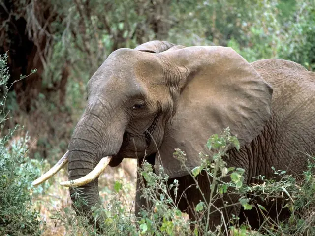
Helping protect the world's most vulnerable species.
Photo: Gary M. Stolz / USFWSPublic domain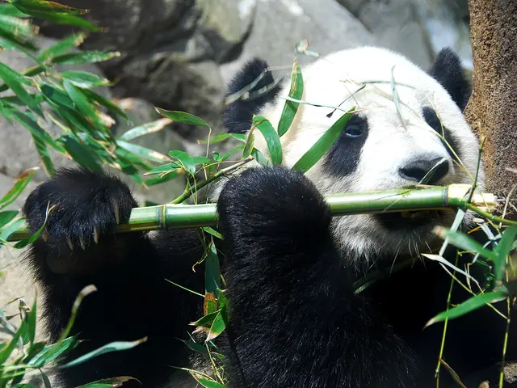
Supporting animal health and population resilience.
Photo: Fernando RevillaCC BY-SA 2.5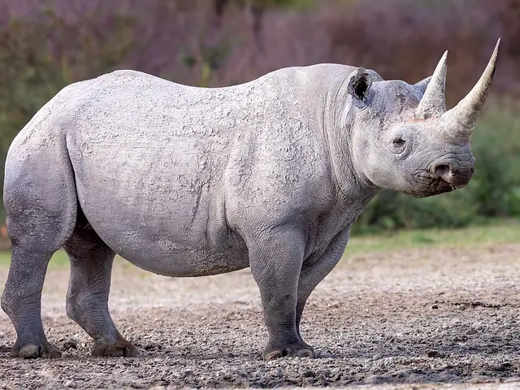
Advancing care across species, in the field or clinic.
Photo: AfricanConservation / Working with WildlifeCC BY-SA 4.0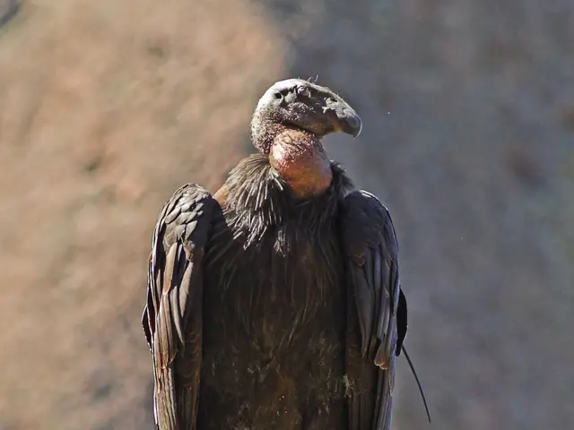
Enabling habitat conservation through species support.
Photo: Jim BahnCC BY 2.0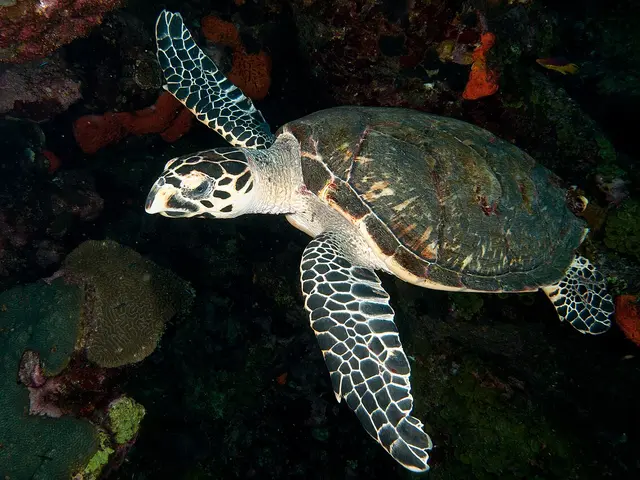
Uniting experts across disciplines and borders.
Photo: GP Schmahl / NOAAPublic domain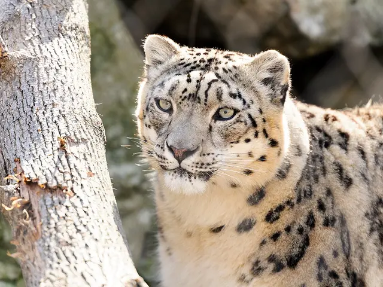
Building a more resilient future through strategic giving.
Photo: Eric KilbyCC BY-SA 2.0Grounded in a 236-record evidence index with species and model labels kept explicit.
Working with zoos, wildlife organizations, veterinary teams and academia.
Training, practical knowledge tools and expertise.
Tracking outcomes for species, habitats and ecosystems.
Open accountability, integrity and a long-term conservation vision.
Real-world and cross-species applications.
Support institutional partnerships.
Open science and education.